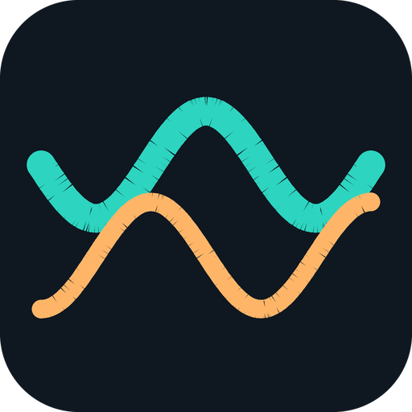
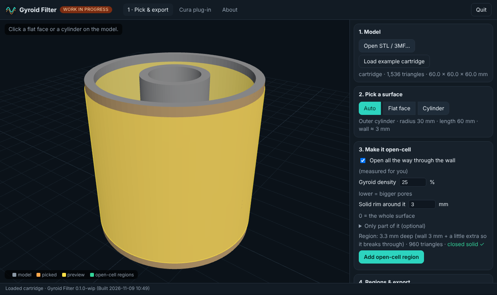

Gyroid Filter
Pick a flat face or a cylinder and make part or all of it open-cell gyroid, for printing fillable carbon filters. Works with Cura, PrusaSlicer and OrcaSlicer.
Get it on GitHub 📘 Manual (PDF)
What it does
Click a surface
A flat face or a true cylinder (hole or outer, full or partial). It finds the whole surface and measures the wall under it.
Open-cell, all the way through
No walls, no skin: the gyroid strands are the surface, so air passes and granules stay in. Choose density, a solid rim, or just a window.
Your slicer does the work
A Cura plug-in adds a cutting mesh; for PrusaSlicer and OrcaSlicer you get a 3MF with the regions already in as modifiers. Your model is never changed.
What exists, and what does not
| Part | Status |
|---|---|
| Picking, regions, web app, PrusaSlicer 3MF | Working. Sliced in a real PrusaSlicer 2.7.2 and the G-code checked |
| OrcaSlicer 3MF | Written from Orca's source, not opened in Orca yet |
| Cura plug-in | Works well in a real Cura on Linux Mint (author's test). Windows and Mac not tested yet |
| Printing a real filter, pore size vs density | Nothing printed or measured yet |
| Cones, spheres, free-form surfaces; housing and lid design | Not there |
Install (no terminal)
- Download and unzip.
- Double-click
GyroidFilter-Linux.sh,GyroidFilter-Windows.batorGyroidFilter-Mac.command. Needs Python 3.8+ and nothing else. - Your browser opens. Load the example cartridge, click a wall, press Add open-cell region, export.